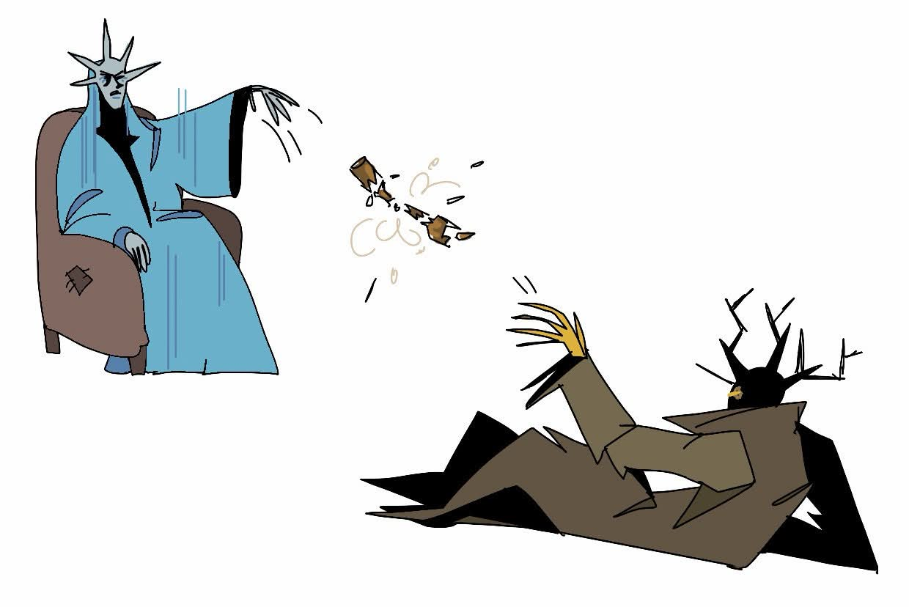

The Deadlock Epidemic
A deep dive into what makes this game so horrifically addicting that I can't stop thinking about it.

Deadlock is a third‐person multiplayer online battle arena (MOBA for short) that takes place in an alternate reality of New York, where the supernatural and paranormal are no longer things of dreams or spirituality. The game takes place during a ritual where two elder gods compete against each other.

What sets this game apart?
Despite having the same DNA as many other MOBA shooters of it's kind such as split teams, and unique character abilities. What makes this game special is not only the dark and gritty urban fantasy‐inspired lore and worldbuilding, but the fact that character roles (healer, tank, support, etc...) aren't strictly defined, as many of it's counterparts. This is done through a commonly known mechanic called "builds."
That said, it is completely viable to play a character geared for support and max out their gun stats instead... Machine gun Rem, I am looking at you.
My Favorite Characters
Seven

An escaped death row convict who wishes to make his god complex more than just a complex.
Rem

If it wasn't obvious, Rem is not from this dimension. He is a sleepy little fella who is concerned with going back home and taking a nap.
Viscous

THEY MADE YURI LOWENTHAL INTO A SLIME!?
Conclusion
This game ROCKS. Me and Deadlock are bros now.
As of writing this, Deadlock is still in beta. So GO BEG YOUR FRIENDS FOR AN INVITE CODE NOW!!!!!!!!
Or don't.